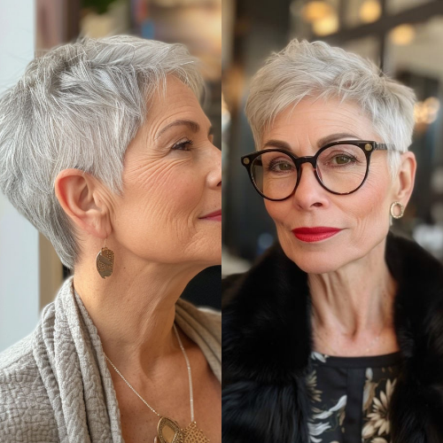
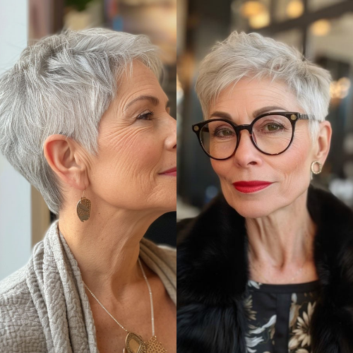

The Ultimate Guide to Short Spiked Hair: Trendy Styles & Maintenance Tips
Short spiked hair has remained a staple in men’s and women’s fashion, offering a bold, edgy, and effortlessly stylish look. Whether you’re aiming for a modern take on the classic spikes or a more subtle textured appearance, this hairstyle is versatile enough to suit various hair types and personal styles. In this guide, we’ll explore the latest trends, styling tips, and maintenance hacks to keep your spiked hair looking sharp.
Trending Short Spiked Hair Styles
1. Textured Spikes
A softer, more natural version of the traditional spiked hairstyle, textured spikes add movement and volume. This style works best with matte styling products like clay or pomade for a modern, effortless look.
2. Faux Hawk Spikes
A trendy alternative to the full mohawk, the faux hawk spike style offers just the right amount of edginess. It features slightly longer hair at the center while the sides remain tapered or faded.
3. Undercut with Spiked Top
This look pairs a sharp undercut with a spiky top, creating a bold contrast. It's ideal for those who want a striking and stylish haircut with minimal maintenance.
4. Short Spiky Crop
Inspired by the French crop, this style includes short, choppy layers and a slightly spiked front for a contemporary appeal. It’s an excellent option for individuals looking for a low-maintenance yet trendy haircut.
5. Messy Spiked Hair
If you prefer a more relaxed aesthetic, the messy spiked hair trend is perfect. Using a light-hold wax or mousse, you can achieve a controlled yet effortless tousled look.
How to Style Short Spiked Hair Like a Pro
1. Start with Clean, Damp Hair
- Wash and towel-dry your hair before applying any styling products. Using a lightweight volumizing shampoo can add texture.
2. Apply the Right Product
- Use a matte wax, pomade, or gel depending on the level of hold you prefer.
- Work a small amount into your fingers and evenly distribute it through your hair.
3. Style with Your Fingers or a Comb
- Use your fingers for a more natural, messy look.
- For structured spikes, a fine-tooth comb can help shape precise sections.
4. Set with Hairspray
- Lightly mist your spiked hair with hairspray to maintain hold throughout the day without making it stiff.
Maintenance Tips for Spiked Hair
- Regular Trims: Keeping your hair at the ideal length is key to maintaining sharp spikes.
- Use the Right Shampoo: Opt for a sulfate-free shampoo to prevent product buildup and maintain scalp health.
- Avoid Overloading with Product: Too much styling product can weigh hair down and make it look greasy.
- Refresh Between Washes: A dry shampoo can help absorb excess oil and keep your hair looking fresh.
Final Thoughts
Short spiked hair is a timeless yet contemporary hairstyle that continues to evolve with modern trends. Whether you prefer a classic spiky look or a more textured, messy finish, this style remains versatile and easy to maintain. By following the right styling techniques and using quality products, you can achieve a sleek, stylish, and effortlessly cool appearance every day.
Looking for more hairstyle inspiration? Stay updated with the latest trends and tips to keep your hair game strong!
 
